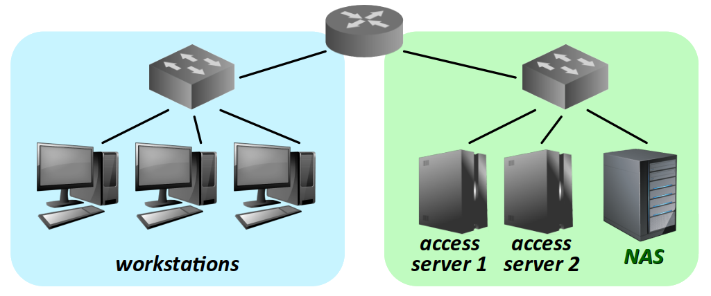
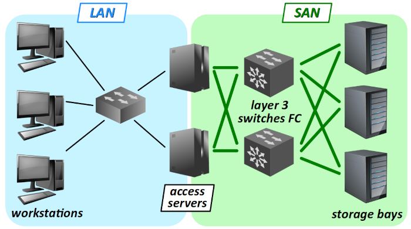
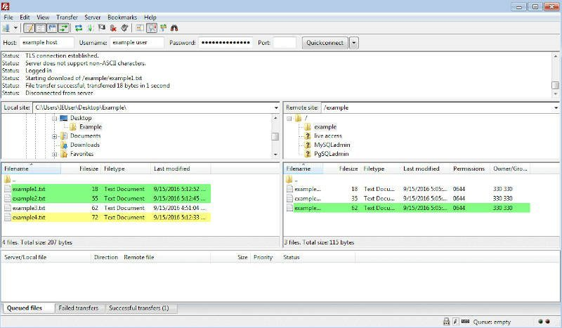

Dans un réseau local équipé de postes de travail multi‑utilisateurs, il est devenu très rare d'y stocker les fichiers d'applications (documents bureautiques, programmes sources, images, maquettes numériques, bases de données, etc.). En effet, une telle solution obligerait chaque utilisateur à travailler toujours sur la même machine, et cette contrainte est incompatible avec les modes de fonctionnement de nombreux contextes professionnels (établissements éducatifs, grandes entreprises, pépinières…).
- Depuis longtemps, une pratique usuelle consiste à placer les fichiers sur un espace de stockage dédié – typiquement, un serveur de fichier – au sein du réseau local, voire sur un site distant lorsque l'organisation est réparties sur plusieurs lieux mais fait appel à des données communes. Et même pour une petite entreprise, rien n'interdit que ses fichiers soient accessibles hors du réseau local, à condition de mettre en place ce qu'on appelle une zone délimilarisée (cf. chap. R1‑II ), avec bien entendu un contrôle d'accès.
- Une autre solution consiste plus à externaliser le stockage des fichiers, c'est‑à‑dire à faire sous‑traiter ce service par un hébergeur de données, via l'Internet. On parle alors de stockage dans le cloud et cette solution, largement adoptée par de nombreuses entreprises, est aussi plébicitée par les particuliers, en ce qu'elle donne accès aux documents depuis n'importe quelle connexion à l'Internet et n'importe quel appareil : ordinateur, smartphone, etc.
Dans tous les cas se posent les questions techniques de choix de l'architecture matérielle et logicielle pour assurer le service de stockage et d'accès aux fichiers. Comme toujours, il existe une grande diversité de solutions, chacune ayant ses avantages et inconvénients. Les principales technologies existantes sont désignées par les sigles suivants :
- le DAS ou direct attached storage, c'est‑à‑dire le stockage sur un ou plusieurs disques intégrés (directement reliés) à un serveur qui peut éventuellement être utilisé pour d'autres services (web, proxy, etc.) ;
- le NAS ou network attached storage, c'est‑à‑dire une machine dédiée au stockage comprenant un certain nombre de disques (selon la capacité requise) et qui peut être reliée à divers serveurs pour assurer l'accès aux fichiers dans un réseau local ;
- le SAN ou storage area network, c'est‑à‑dire un sous‑réseau de machines exclusivement dédié au stockage de données au sein d'un réseau local ; ce sous‑réseau utilise des composants (machines, liaisons) et des protocoles spécifiques.
Comme dans les chapitres précédents, le thème abordé est beaucoup plus complexe et technique qu'on pourrait le penser au premier abord. Ce chapitre n'en constitue qu'une introduction ayant vocation à donner des éléments de connaissances générales à un futur technicien en réseaux. Il aborde :
- d'abord les aspects matériels des serveurs de fichiers, rappelant les bases de la technologie des disques, puis en détaillant les trois grandes solutions de stockage de fichiers évoquées supra – DAS, NAS, SAN ;
- puis sur les aspects logiciels des serveurs de fichiers, en citant les protocoles composants permettant le partage de fichiers au sein d'un réseau – NFS, SMB, FTP, etc. ;
- et enfin, et en abordant la technologie du stockage des données, en détaillant notamment les différents dispositifs de redondance RAID entre les volumes de données, ainsi que les technologies spécifiques de liaisons dans les SAN.
Technologie matérielle des serveurs de fichiers
Technologie des unités de stockage
On appelle unité de stockage de masse W (en anglais, mass storage unit) un dispositif qui permet de stocker et restituer une grande quantité – au minimum plusieurs centaines de Go – de données non volatiles.
Actuellement, trois technologies de stockage de masse sont utilisées dans les réseaux informatiques, dont les deux plus connues sont les suivantes.
- Le disque dur W – en anglais, HDD pour hard disk drive – est une technologie basée sur une série de plateaux magnétiques tournants et de têtes de lecture montées sur un bras pivotant.
- Le disque SSD W – pour solid‑state drive – est une technologie basée sur des circuits intégrés de mémoires flash NAND.
Les performances en rapidité sont conditionnées par deux facteurs :
- le temps d'accès aléatoire à une unité de mémoire ; dans le cas d'un SSD, il est constant quelle que soit la position de la zone lue (ce n'est pas le cas avec un HDD) et environ 100 fois plus bref qu'avec un HDD ;
- la vitesse de lecture et d'écriture, qui est environ 10 fois plus grande avec un SDD qu'avec un HDD.
À noter également le maintien des performances en rapidité d'un SSD quelle que soit la fragmentation W des données, ce qui n'est pas le cas avec la technologie HDD.
La question du coût d'achat d'un SSD doit donc être relativisée, puisqu'il faut aussi tenir compte du coût d'utilisation sur le long terme (le coût de l'électricité augmente chaque année). De plus, les prix du marché des SSD sont orientés à la baisse. Mais on peut quand même retenir l'ordre de grandeur de 0,1 €/Go en technologie SSD en 2019, soit environ 3 fois plus qu'en technologie HDD.
Quant à l'autre inconvénient notable des SSD, à savoir le nombre limité de cycles d'écriture des cellules mémoires, il est géré par le pilote embarqué du disque, qui s'interdit lui‑même l'emploi des cellules usagées. Le disque ne devient donc pas brutallement défaillant parce que l'une de ses cellules est endommagée : c'est seulement sa capacité qui diminue peu à peu au cours de son utilisation.
Par la suite, on parle de disque pour désigner indifféremment ces deux types d'unité de stockage de masse, même si le terme « disque » est technologiquement inapproprié pour un SSD.
On recourt également à la technologie des bandes magnétiques W mais uniquement pour l'archivage, c'est‑à‑dire la sauvegarde à long terme de données qui sont destinées à être lues qu'exceptionnellement. Par rapport à la technologie des SSD, des HDD ou des disques optiques, celle des bandes magnétiques :
- procure une capacité supérieure de stockage (jusqu'à 300 To dans une cartouche !) et un coût inférieur (environ 0,005 €/Go) ;
- mais n'offre qu'un accès exclusivement séquentiel (et non pas aléatoire) aux données.
- La technologie hybride SSHD W (solid state hybrid drive), peu développée en général, n'est quasiment pas employée pour le stockage de masse en réseau.
- La technologie des disques optiques (CD, DVD) n'est pas du tout employée pour le stockage de masse en réseau. Extrêmement limitée en cycles d'écriture, elle ne pourrait convenir qu'en archivage, mais souffrant d'une capacité très faible (au mieux seulement 50 Go environ en blu‑ray W, contre 6 To pour une cartouche de bande magnétique usuelle), elle supposerait trop de manipulations physiques des supports.
Liaison du disque au système hôte
La liaison de données entre l'unité de stockage et la machine hôte dans laquelle l'unité est hébergée a un impact décisif sur les performances en vitesse de lecture et d'écriture.
Aujourd'hui, dans le contexte des serveurs et autres machines de stockage, une technologie domine pour les liaisons aux unités de stockage de masse domine : SAS W ou serial attached SCSI. Elle résulte d'une implémentation par liaison série de la technologie de bus parallèle SCSI W (small computer system interface).
Par rapport à la technologie SATA W (serial advanced technology attachment) usuellement employée pour les postes de travail, la technologie SAS présente de nombreux avantages :
- en premier lieux, d'être compatible avec la technologie SATA (même type de connecteurs) ;
- d'opérer en full duplex ;
- de garantir le débit nominal pour chaque disque connecté (pas de division de la bande passante) ;
- d'identifier jusqu'à 128 disques par connexion.
Stockage sur disques intégrés à un serveur (DAS)
Un DAS ou direct attached storage W est un système constitué d'un ou plusieurs disques intercheangeables et réunis dans un boitier, lequel destiné à être relié directement à un poste de travail, un serveur ou même un NAS.
Un DAS ne dispose pas d'interface réseau, il ne peut pas être raccordé à un switch ou un routeur.
Un DAS se présente typiquement dans un boîtier de type tour, bien adapté dans un bureau ou une installation domestique. Muni d'un connecteur USB ou Thunderbolt haute vitesse, il peut jouer le rôle d'un « super disque dur » ou encore d'extension de capacité de stockage pour un NAS.
Le boîtier peut souvent être acquis sans disque, ce qui apporte une certaine souplesse pour dimensionner une solution. Dans tous les cas, il embarque une carte électronique pour mettre en œuvre des technologies logicielles de type RAID (cf. infra ). C'est pourquoi on parle aussi de boîtier RAID.
Certains boîtiers de type rack réunissant de nombreux disques sont parfois appelés DAS. Pour un technicien débutant, cela peut créer une confusion, car en réalité, ce sont des baies de stockages pour des SAN (cf. infra ).
Comparaison avec les autres technologies de stockage
Comparé aux autres technologies de stockage, en règle générale, le DAS présente deux avantages significatifs :
- être économique puisqu'il n'est essentiellement constitué que de disques ;
- être performante en termes de vitesse puisque relier directement des disques à un poste de travail ou un serveur minimise les distances de liaison et les protocoles d'accès aux données.
En contre‑partie, le DAS souffre d'un inconvénient majeur : l'accès direct aux disques est unique, il ne peut pas être partagé avec une autre machine que celle avec laquelle le DAS est relié.
Autrement dit, si l'on veut un mettre en place un accès par deux serveurs, que ce soit parce que la charge en requêtes est importante, ou pour garantir par redondance la continuité du service d'accès, on est obligé d'employer deux DAS, et donc de dupliquer les données indépendamment de toute motivation de redondance, sachant que par la suite cela pose des gros problèmes de synchronisation : en effet, il n'est pas possible de mettre en place un RAID – cf. infra – à cheval sur deux DAS.
En résumé, employé seul, un DAS constitue une solution de sockage qui n'est envisageable que pour un petit service de partage de fichiers sur un réseau.
Serveur de stockage en réseau (NAS)
Un NAS ou network attached storage W est un machine de type serveur comprenant plusieurs disques intercheangables formant ce qu'on appelle une baie de stockage intégrée.
Doté d'une interface réseau, un NAS peut être accédée par les autres machines hôtes du réseau local dans lequel il est hébergée (notamment les postes de travail), comme n'importe quel serveur.
Les NAS se présentent aussi sous forme de tour ou de rack, avec les mêmes avantages et inconvénients respectifs que pour les machines serveurs (cf. chap. R2‑IV ).
Remarque : malgré une forte ressemblance, il faut ne pas confondre un NAS de type tour avec un DAS (cf. la photo supra).
Comparaison avec les autres technologies de stockage
Par rapport aux autres technologies de stockage, le NAS offre un excellent compromis en termes de polyvalence et de simplicité de mise en œuvre.
En comparaison avec un DAS, un NAS est certes plus onéreux à l'acquisition, mais dans la perspective d'un accès en réseau, il peut constituer finalement une solution plus compétitive si l'on considère l'achat du serveur associé au DAS.
De plus, en assurant la séparation des fonctions de stockage et de service d'accès, un NAS apporte une grande souplesse d'utilisation. Si les requêtes vers les données augmentent, il est possible d'ajouter au réseau des serveurs d'accès augmenter la capacité de traitement, sans avoir à dupliquer les données (cf. la figure ci‑dessous à titre d'exemple).
En comparaison avec un SAN, un NAS présente l'avantage d'être facile à mettre en œuvre. C'est un composant réseau autonome qui, avec un système logiciel dédié, qui peut être acquis presque « clef en main ». Il est donc apprécié par les particuliers et les petites entreprises qui n'ont pas de gros besoins informatiques et qui cherchent à minimiser les compétences requises pour la mise en service, l'utilisation et la maintenance.
De plus, s'il est suffisamment dimensionné, ou moyennant une extension de ses capacités de stockage par l'adjonction d'un DAS, il peut aussi assurer avantageusement les fonctions de sauvegarde et d'archivage.
Néanmoins, le NAS présente quand même un point faible : en cas de panne du système ou de défaillance de la liaison au réseau, plus aucun accès aux données n'est possible. Ce n'est donc pas une solution satisfaisante pour des données fortement sollicitées et requérant une continuité de service robuste aux aléas informatiques usuels.
C'est pouquoi les grandes entreprises, les administrations sensibles (secteurs de la défense, police, justice, santé…) et, bien entendu, pour leurs services « premium », les hébergeurs web ont recours à des technologies plus complexes que constituent les SAN.
Réseau de stockage (SAN)
Un SAN ou storage area network W est un réseau de machines exclusivement dédié au stockage de données.
Selon la technologie de liaisons qu'il emploie, il peut constituer un réseau local à part entière, accessible via une ou plusieurs passerelles, ou un simplement un sous‑réseau du réseau local dans lequel il s'intègre.
Un SAN est donc constitué d'une variété d'équipements, tous de type rack pour pouvoir être intégrés avec un minimum d'encombrement.
- On y trouve une ou plusieurs baies de stockage W (en anglais, disk arrays), chaque baie étant elle‑même constituée d'un grand nombre de disques interchangeables, comme un DAS, mais avec une connectique réseau spéciale.
- On y emploie des switchs fiber channel, qui sont des commutateurs dotés d'une technologie de liaison spécifique pour faire circuler les données non pas sous forme de fichiers mais de blocs (cf. infra ) et ce via le protocole SCSI (comme entre la carte mère d'un ordinateur et un disque dur).
- Enfin, on recourt à plusieurs serveurs pour assurer en parallèle et/ou redondance le traitement des requêtes d'accès aux données stockées dans les baies. Chaque serveur voit la zone de stockage des baies auxquelles il a accès comme s'il s'agissait de ses propres disques.
L'architecture d'un SAN peut être très différente d'un contexte à un autre. La figure de principe proposée ci‑dessous n'en donne qu'une représentation académique.
La mise en place et l'administration d'un SAN représentent des coûts importants. Un tel choix ne se justifie donc que pour des entreprises ou des organisations de grande taille, ou éventuellement des PME, mais spécialisées dans le domaine du stockage de données.
En résumé, retenons que, outre la prise en charge d'un très grand nombre de requêtes et de débits importants, un SAN doit permettre de garantir la continuité de service même en cas de panne d'équipements ou de liaisons.
Technologie logicielle des serveurs de fichiers
Comme toujours en informatique, les aspects logiciels sont déterminants pour comprendre le fonctionnement d'une architecture matérielle. Cette règle est particulièrement pertinente dans le cas des serveurs de fichiers et de la problématique générale du stockage.
Logiciels serveurs de fichiers
Un logiciel serveur de fichiers est une application s'exécutant en tâche de fond sur une machine. Dans un réseau local, elle a vocation à donner l'accès à d'autres machines du réseau à toute une arborescence de fichiers stockés dans des baies de disques.
Sur les postes de travail qui bénéficient de cet accès, l'arborescence des fichiers apparaît comme si les dossiers et fichiers étaient placés sur un disque du poste lui‑même. On parle alors de disque réseau.
Sans surprise, un logiciel serveur de fichiers opère sur des réseaux informatiques employant une pile de protocoles TCP/IP et conformément à un modèle client‑serveur.
- La partie client est prise en charge par le système d'exploitation du poste de travail qui souhaite accéder aux fichiers ; dans leurs versions récentes, tous les systèmes d'exploitation (Linux, Windows, MacOS…) intègrent cette fonctionnalité.
- La partie serveur est prise en charge par un composant logiciel qui existe ou vient se greffer au système d'exploitation de la machine serveur en charge de traiter les requêtes des clients.

Les échanges de données entre le client et le serveur sont implémentés conformément à un protocole de communication applicatif (couche nº 7 du modèle OSI) et il en existe plusieurs possible.
Dans le cadre de ce chapitre, il n'est pas question d'étudier en détails tous ces protocoles, mais simplement d'en mentionner certains – surtout s'ils sont faciles à mettre en œuvre dans le cadre d'un sujet de travaux pratiques ou d'un futur projet.
- SMB W ou server message block (anciennement, CIFS ou common internet file system) est le protocole qui a été initialement développé en 1983 par IBM. Il a été rapidement adapté par Microsoft pour les machines à systèmes d'exploitation Windows.
- NFS W ou network file system est un protocole développé en 1984 par Sun Microsystems pour machines à système d'exploitation GNU/Linux ou Unix. Normalisé en 1989 par la RFC 1094 , il a été entièrement repensé en 2010 dans sa version 4 pour garantir la sécurité des échanges de données qu'il met en œuvre. Sa version la plus récente (4.2) est spécifiée par la RFC 8178 .
Protocoles de transfert de fichiers
Le protocole de communication FTP W ou file transfer protocol est un autre protocole de partage de fichiers opérant sur un modèle client‑serveur, mais via une connexion temporaire. Il a été introduit dès 1971 par la RFC 114 , maintenant obsolète et remplacée depuis 1985 par la RFC 959 .
Ce protocole permet la gestion des fichiers sur le serveur, opérée à distance depuis un poste client : ajout par transfert en upload, récupération par transfert en download ou encore suppression ou déplacement d'un fichier dans l'arborescence sur le serveur. En revanche, il ne permet pas la manipulation à distance du contenu de ces fichiers.
Le protocole FTP est typiquement utilisé pour ajouter ou supprimer des fichiers stockés chez un hébergeur de données (notamment des fichiers de pages web).
- Le plus souvent, il est mis en œuvre avec une authentification par login et mot de passe.
- Mais on peut également l'utiliser en autorisant les connexions anonymes sans mots de passe, pour donner un accès public à des fichiers.
Le protocole FTP est un protocole applicatif (couche nº 7 du modèle OSI) qui s'appuie sur la pile de protocole TCP/IP. Il utilise les ports :
- nº 20 (écoute) et nº 21 (données) dans sa version simple ;
- nº 989 (écoute) et nº 990 (données) dans sa version sécurisée implicite par le protocole TLS (cf. chap. R1‑IV ) – et on le désigne alors par le sigle FTPS.
En effet, même en mettant en place un contrôle d'accès, le protocole FTP n'est pas sécurisé, puisque les échanges client‑serveur ne sont pas chiffrés. Donc, en particulier, le mot de passe transmis au début de la connexion peut être lu sur une machine tierce connectée au réseau, avec n'importe quel logiciel de scan de trames (Wireshark ou autre).
Par ailleurs, une condition importante à l'interopérabilité du protocole FTP est l'encodage des noms de fichiers qui, idéalement, doit être compatible avec tous les systèmes d'exploitation. En principe, cela devrait être permis par l'emploi du format UTF‑8, mais ce n'est pas le format par défaut sur tous les systèmes d'exploitation. En particulier, le système de partition NTFS W (new technology file system) de Windows emploie le format UTF‑16. Des routines de transcodage doivent alors prendre en charge les adaptations nécessaires.
Le protocole SFTP
Le protocole SFTP – pour secure file transfert protocol – est un protocole de transfert et de gestion de fichiers qui opère sur une connexion SSH (secure shell W).
Il s'agit d'un protocole distinct de FTP à part entière, à ne pas confondre avec FTPS. Sa dernière version (v6) est spécifiée par un Internet Draft de l'IETF . Il utilise le même port nº 22 que SSH.
Logiciels client FTP(S) et SFTP
Les systèmes d'exploitation Linux permettent la mise en œuvre du protocole FTP du côté du client en ligne de commande ou via un script. Il suffit pour cela d'employer les très anciennes commandes ftp et sftp . Elles sont encore pré‑installées sur toutes les distributions.
Mais pour effectuer des transferts de fichiers occasionnels entre un poste de travail et un serveur, il est plus commode d'employer un logiciel dédié. L'un des plus connu est FileZilla W parce qu'il a été le premier développé et qu'il est resté gratuit, open source et multi‑plateforme.
Il existe aussi des logiciels concurrents, que l'on peut découvrir en consultant par exemple cette page web .
Quel que soit le système d'exploitation du poste de travail, l'installation de FileZilla ne pose aucune difficulté dans la mesure où il s'agit d'un logiciel d'usage courant (même s'il n'est pas aussi « grand public » qu'un navigateur).
- Avec un système Windows, il suffit de télécharger l'installateur fourni sur la page web du site du logiciel puis de l'exécuter, comme il est d'usage.
- Avec un système Linux, on peut procéder de même , ou même en ligne de commande, via l'outil d'installation
apt.
La prise en main de FileZilla est relativement simple.
- Dans le menu
Fichier, via la commandeGestionnaire de site…, on commence par cliquer sur le boutonNouveau site. Après lui avoir donné un nom (un simple mnémonique suffit), on paramètre la connexion au serveur en renseignant le protocole mis en œuvre – FTP(S) ou SFTP – puis l'adresse IP du serveur, les identifiants de connexion et le type de chiffrement. - On peut très facilement effectuer des transferts de fichiers entre le poste de travail et le serveur, dont les arborescences de fichiers figurent respectivement dans les fenêtres de gauche et de droite de l'interface. Il suffit de procéder par glisser‑déposer, comme avec un explorateur de fichiers usuel.
Fichier. Il suffit de le sélectionner pour que la connexion avec le serveur s'établisse automatiquement (via l'authentification spécifiée). Logiciels serveurs FTP(S) et SFTP
La mise en œuvre du protocole FTP du côté du serveur procède bien évidemment avec des usages différents de ceux du côté du client. Ici, aucun utilisateur ne doit être requis pour répondre aux requêtes des clients : comme pour les serveurs en général, tout doit être automatisé.
Comme pour les serveurs de fichiers, les logiciels serveurs FTP, FTPS et SFTP pour les systèmes Linux n'ont pas d'interface graphique. Ils sont paramétrés via des fichiers de configuration.
Un des plus usuels se nomme VsFTPD – pour very secure FTP daemon. Réputé très sûr (il n'a connu aucune faille majeure depuis sa création), facile à mettre en œuvre (cf. le sujet de TP R2‑2 ), il présente néanmoins le défaut de pas prendre en charge le protocole SFTP.
Sur un serveur à système Windows, on peut aussi se tourner vers un logiciel comme FileZilla Server W, qui dispose d'une interface graphique comme dans la version client.
Plus généralement, on trouve sur cette page web W un panorama des différents logiciels de serveur FTP.
Technologie du stockage des données
Taille de l'unité de lecture/écriture – notion de bloc
On appelle bloc W le plus petit volume mémoire qu'il est jugé opportun de lire lors d'une opération de lecture sur un disque.
Cette notion émerge de la technologie des HDD pour lesquels, lorsqu'un accès disque est demandé, il existe un temps de latence avant que le secteur concerné passe sous la tête de lecture (cf. la fig. ci‑contre).
Plus le bloc est petit, plus le temps de latence est potentiellement long, donc on a intérêt à ne pas choisir une taille de bloc trop petite. L'octet est une unité beaucoup trop petite, la taille des blocs est au minimum de 512 octets.
Quelle que soit la technologie de disque – HDD ou SSD – La partition des disques en blocs présente de nombreux avantages. Elle permet notamment de :
- récupérer efficacement les espaces vacants laissés par les suppressions de fichiers, sans avoir à réarranger toutes les données ;
- s'affranchir de la notion de fichier pour stocker les informations, ce qui est très utile pour les bases de données ;
- implémenter les technologies de redondance (RAID – cf. infra) avec une fine granularité.
Dispositifs de redondance – niveaux de RAID
Le sigle RAID W ou redundant array of independent disks fait référence à diverses techniques logicielles de répartition de données dans un ensemble de disques.
C'est un élément clef de la continuité de services et aussi des performances de vitesse des solutions de stockage de masse (DAS, NAS, SAN).
On parle de niveau de RAID x où x est un numéro qui distingue la technique logicielle employée, sachant :
- qu'il existe 7 niveaux standards W, numérotés de 0 à 6 ;
- que certains niveaux peuvent se combiner entre eux ; on parle alors de RAID hybride W.
Comme toujours, aucune technique n'est idéale, chacune présentant des avantages et des inconvénients – et c'est soucis d'optimisation que les combinaisons sont envisagées. Le choix d'un niveau de RAID dépend bien entendu des moyens financiers, du volume de données à stocker, de la charge en requêtes et du contexte : base de données, fichiers volumineux (vidéo), etc.
Il existe aussi divers niveaux de RAID non standards : RAID RE, RAID TP… W.
L'implémentation des niveaux de RAID peut être :
- rapportée sous la forme d'une couche logicielle au système d'exploitation de la machine qui gère l'ensemble des disques ;
- embarquée comme un système microprogrammé sur une carte électronique spécifique intégrée à une baie de disques ; on parle alors de contrôleur RAID.
Là encore, chaque solution a ses avantages et inconvénients. Les technologies microprogrammées offrent de meilleures performances (car elles opèrent en parallèle du système d'exploitation) mais sont plus complexes à mettre à jour. En cas de défaillance, il y a un risque de perdre les données si l'on ne trouve pas exactement le même contrôleur, avec le même firmware.
Niveaux de RAID standards les plus usuels
Le niveau RAID 0 désigne une technique d'entrelacement (en anglais, striping, le terme stripe signifiant « bande ») qui permet d'augmenter la vitesse de lecture et d'écriture. Il nécessite au moins deux disques physiques.
Le principe consite à répartir équitablement les blocs d'un fichier sur k disques, de sorte que lorsqu'on lit ou écrit le fichier, l'opération se répartit simultanément en parallèle. Approximativement, on divise le temps d'exécution par k. De plus, cette technique permet de consacrer la totalité de l'espace de stockage aux données.
Mais le niveau RAID 0 est rarement employé seul parce qu'il n'assure aucune redondance des données. Au contraire, la défaillance d'un seul disque constitue un problème critique pour l'accès à l'ensemble des données !
Le niveau RAID 1 consiste en une duplication à l'identique (en anglais, mirroring) des données sur au moins deux disques différents, de sorte que la défaillance de l'un deux ne soit pas critique pour l'accès aux données.
C'est l'application la plus simple du principe de redondance qui garantit la continuité de service dès lors que les disques sont manipulables à chaud. De plus, les opérations de lectures de blocs sont parallélisables. En revanche, les opérations d'écriture ne bénéficie d'aucun gain en vitesse. Et le principal inconvénient se situe en termes de capacité mémoire : le coût est multiplié par le nombre de dupplication (par exemple, sur deux disques, la moitié de l'espace disque est consommé par la redondance).
Le niveau RAID 1 est souvent employé comme solution initiale pour le stockage de masse, car il autorise facilement les évolutions vers des niveaux plus complexes.
Le niveau RAID 5 met en œuvre une technique de redondance répartie basée sur un calcul de parité qui permet de reconstituer un disque perdu à l'aide de l'ensemble des disques restant. Il nécessite au moins 2 + 1 disques physiques. Le principe est le suivant :
- dans le fichier, les blocs sont répertoriés par bandes de k blocs consécutifs s'il y a k + 1 disques ;
- pour chaque bande, un bloc de parité supplémentaire est généré ; on a alors autant de blocs que de disques ;
- dans les disques, les blocs sont agrégés en bandes comme en RAID 0 ; mais les blocs de parité sont répartis équitablement sur les disques, et non pas toujours dans le même disque.
Le niveau RAID 5 est présente l'avantage d'un moindre coût mémoire puisque, globalement sur trois disques, le volume d'un seul est consacré à la redondance (contre au minimum un sur deux en RAID 1). En revanche, il n'apporte qu'un faible gain en vitesse de lecture et même une perte en vitesse d'écriture puisqu'il faut calculer les blocs de parité avant de les écrire.
Niveaux de RAID hybrides
Un niveau de RAID hybride est la composition de deux niveaux de RAID standards x et y. On note la combinaison xy ou encore x+y.
Comme toute composition, elle n'est pas commutative : un niveau de RAID xy n'est pas équivalent à un niveau de RAID yx.
Dans un niveau de RAID hybride, l'ordre de composition doit compris comme procédant des disques vers le fichier. Mais pour en comprendre le principe, il est plus intuitif de considérer l'ordre inverse, du fichier vers les disques.
Ainsi, le niveau RAID 10 (ou 1+0) consiste en une composition de niveaux de RAID 1 et de RAID 0 (cf. la figure ci‑contre) :
- on applique d'abord au fichier un niveau de RAID 0 qui le divise en k volumes virtuels (non représentés sur la figure) avec une répartition par bandes (striping) ;
- puis on applique à chacun de ces volumes virtuels un niveau de RAID 1, autrement dit on les duplique en miroirs.
Au total, ce niveau hybride emploie donc 2k disques.
Technologies de liaisons dans un SAN
Dans un SAN, les liaisons entre machines sont implémentées selon une technologie spécifique pour permettre le transfert de données à très haut débit sous forme de blocs (et non pas de fichiers) comme dans un bus reliant entre un disque dur et une carte mère.
On entend ici le terme de liaison au sens large, c'est‑à‑dire autant d'un point de vue matériel que logiciel.
La technologie Fibre Channel
La technologie Fibre Channel W (ou Fiber à l'américaine) – en abrégé, FC) est très différente de celle employée sur les réseaux informatiques « classiques ».
Une « carte réseau » est désignée HBA W pour host bus adapter puisque la liaison est de type bus. Cet équipement dispose préférentiellement d'une prise de connexion pour fibre optique, mais la technologie existe aussi pour d'autres types de support (paire torsadée, câble coaxial).
Tout HBA possède un identifiant unique nommé world wide name W abrégé WWN. Comme une adresse MAC, il est composé de deux parties :
- la première (3 octets) est l'identifiant attribué au constructeur par l'IEEE ;
- la deuxième (5 octets) est un numéro fixé par le constructeur ;
Il est écrit sous forme hexadécimale, chaque octet étant séparé par le caractère :.
Pour un commutateur, on parle de switch FC car l'électronique et les programmes embarqués sont différents de ceux d'un switch usuel. Il en va bien évidemment de même pour les prises de connexion.